3. Kinetic Theory of Gases#
Relevant readings and preparation:
Concept in Thermal Physics: Chapter 26, section 26.1, 26.3
University Physics with Modern Physics 15th edition: Chapter 18, section 18.1 (pg. 612-613), 18.2 (pg. 613-615), 18.3 (pg. 616 – 618), 18.4, 18.6
Learning outcomes:
Explain the relationships between a gas’s pressure, volume, and temperature.
Describe how molecular interactions determine the properties of a substance.
Relate the pressure and temperature of a gas to the kinetic energy of its molecules.
Use heat capacities to infer whether gas molecules undergo rotational or vibrational motion.
Identify the factors that determine whether a substance exists as a gas, liquid, or solid.
Real vs ideal gas
3.1. Equations of State#
The behavior of matter and its dependence on temperature can be observed in everyday situations. For example, boiling water produces high-pressure steam, and a potato can burst in the oven if steam cannot escape. Water vapour in the air may condense or even freeze on a very cold glass. These examples illustrate macroscopic properties of matter such as pressure, volume, temperature, and mass. However, matter can also be described from a microscopic perspective, in terms of the masses, speeds, energies, and collisions of the individual molecules that it is composed of. Importantly, the macroscopic and microscopic views are closely connected. For instance, atmospheric pressure is the result of countless air molecules striking surfaces at high speeds.
To describe the state of a gas we use state variables; pressure (\(p\)), volume (\(V\)), temperature (\(T\)), and amount of substance (often expressed as moles, \(n\)). Changing one of these variables usually affects the others. When the relationship between these variables can be written mathematically, we call it an equation of state. One of the simplest and most important of these is the ideal gas equation we covered in section 1, which applies well when gas molecules are far apart and moving rapidly (low pressure and high temperature). The ideal gas law as you may recall is:
where \(R\) is the gas constant.
The mass of the gas can also be used by introducing the molar mass M, giving:
From this, we can determine properties such as the density of the gas, \(\rho = pM/RT\). For a fixed mass of gas, the ratio \(pV/T\) remains constant. If we were to change the state of this gas, such that \(p_1 \rightarrow p_2\), and likewise for \(V\) and \(T\), then
Notice that \(R\) is not used in this equation.
This framework links the large-scale, measurable behaviour of gases to the underlying motion and interactions of their molecules.
Example: Biological respiration
To breathe, you rely on the ideal gas equation \(pV = nRT\). Contraction of the diaphragm muscle increases the volume \(V\) of the lungs, decreasing its pressure \(p\). The lowered pressure causes the lungs to expand and fill with air. (The temperature \(T\) is kept constant.) When you exhale, the diaphragm relaxes, allowing the lungs to contract and expel the air.
pV diagrams#
The relationship among pressure, volume, and temperature can be visualised in a three-dimensional \(p\)-\(V\)-\(T\) space, but in practice it is usually more convenient to use two-dimensional graphs. One common representation is the pV-diagram, which shows how pressure varies with volume. On this diagram, we often draw multiple curves, each corresponding to a constant temperature. These curves are called isotherms. Using the ideal gas law \(p=nRT/V\), we see that along an isotherm the temperature is fixed, so pressure is inversely proportional to volume. As a result, each isotherm forms a hyperbolic curve on the pV-diagram.
{kind=link}
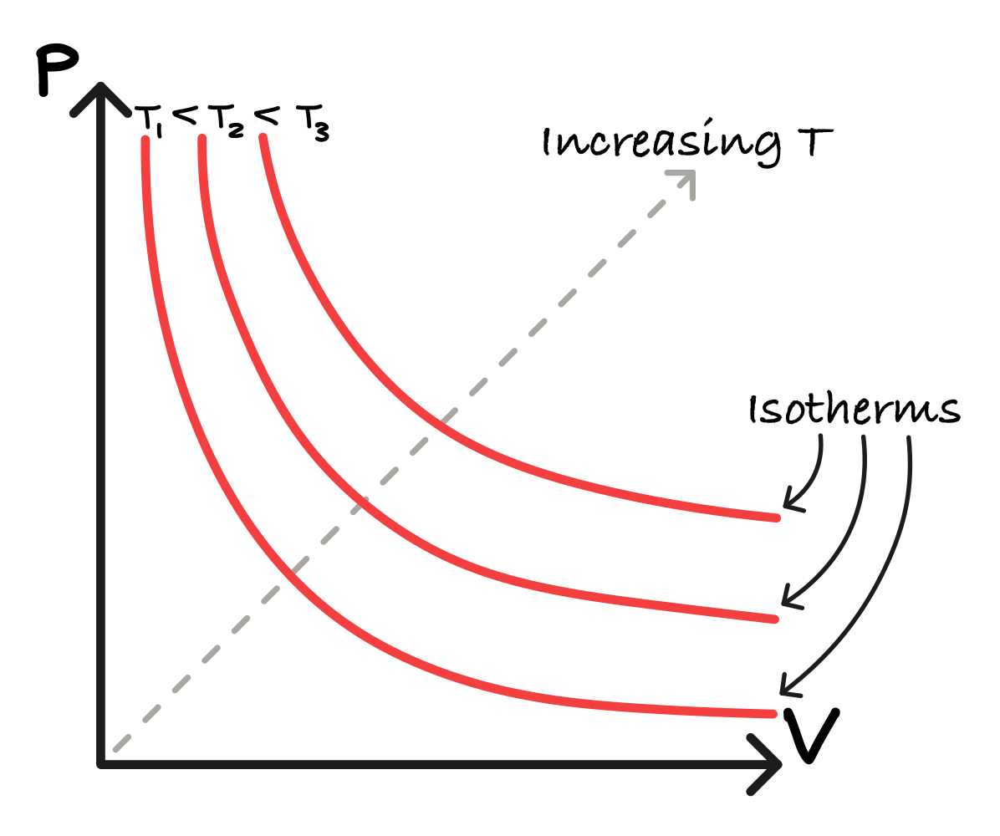
Fig. 3.1 Three isotherms on a pV-diagram, illustrating the temperature dependence of an ideal gas.#
Each line represents a different internal energy. We will use pV-diagrams in subsequent sections of this course.
3.2. Molecular Model of an Ideal Gas#
The purpose of a molecular theory of matter is to explain the observable, macroscopic properties of materials (pressure, temperature, etc.) by relating them to the behaviour and structure of their molecules. We consider the kinetic-molecular model of an ideal gas, in which a gas is represented as a large number of particles moving freely and colliding within a container. This model allows us to connect the ideal gas equation to Newton’s laws and to later predict the heat capacity of gases. The model relies on several key assumptions:
the gas consists of a very large number, \(N\), of identical molecules of mass \(m\) in a volume \(V\),
the molecules are treated as point particles whose size is negligible compared to their separation,
they move constantly and collide elastically with one another and with the walls,
the container walls are rigid and immovable.
{kind=link}
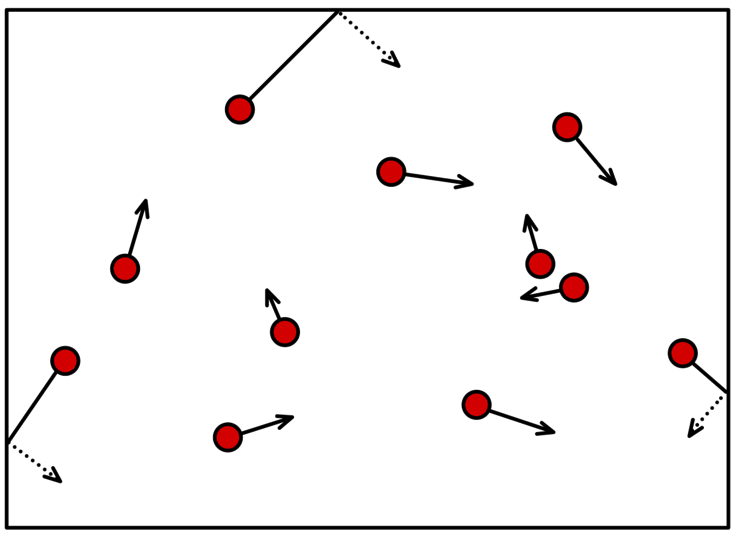
Collision on one wall#
Consider a cubic container of volume \(L_x^3\), containing molecules of mass \(m\). Let one molecule have velocity components (\(v_x,v_y,v_z\)) and let it collide with one of the walls, let’s say the wall perpendicular to the x-direction.
{kind=link}
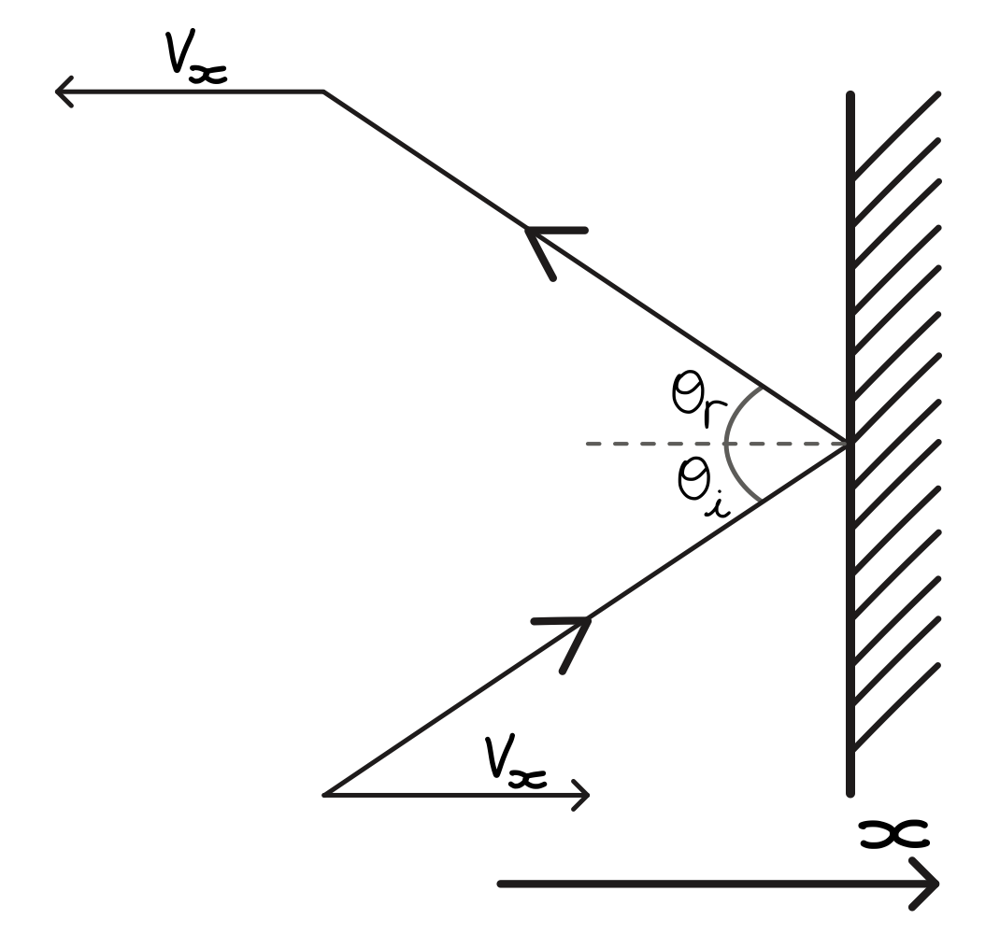
Fig. 3.2 In 2D, velocity components perpendicular to wall \(v_x\) reverse direction, meanwhile \(v_y\) (and \(v_z\) in 3D) are preserved.#
When the molecule strikes the wall, its velocity changes from \(+v_x\) to \(−v_x\).
The change in momentum is:
The time between collisions with the same wall is:
where \(L_x\) is the distance travelled by the molecule, doubled as the particle must bounce back. The average force from one molecule on the wall is
Note that the force on the molecule is related to the force on the wall by Newton’s third law: \(F_\text{molecule} = -F_\text{wall}\). Therefore 1 particle contributes \(F_\text{wall} = mv_x^2/L_x\).
For \(N\) molecules, each with possibly different velocities, we take the average:
Since motion is random, the average kinetic energy is shared equally among directions:
Note that random motion finds \(\braket{v}=0\), and so \(\braket{v}^2=0\neq\braket{v^2}\).
Pressure is the magnitude of the force exerted on the wall per unit area,
Given that the average translational kinetic energy per molecule is \(E_k = \frac{1}{2}m\braket{v^2}\), we can rewrite pressure as:
Pressure is proportional to the number of molecules per unit volume \((\frac{N}{V})\) times the average translational kinetic energy, \(\frac{1}{2}m\braket{v^2}\). Using the ideal gas law alongside our latest definition of pressure, we obtain
which, in conjunction with our original definition of kinetic energy in terms of mass and velocity, simply finds that
For a single degree of freedom,
giving us the expression for the theory of equipartition.
Theory of Equipartition
Every degree of freedom (i.e., translation, rotation) contributes \(\frac{1}{2}k_BT\) of energy:
How much energy is 1/2kBT at room temperature?
A tiny quantity of energy. The total energy associated with the translation of molecules is
For an ideal gas (point-like, no rotational freedom), \(E_\text{trans}=U=\text{internal energy}\).
Example: How fast does a helium atom move at room temperature?
A helium atom has mass 6.64 \(\times\) 10-27 kg. The translational energy \(E_\text{trans}\) can be sourced from our degrees of freedom, or equivalently, our kinetic energy,
Using the root-mean-square of \(v\),
we can plug in \(T=293\ \text{K}\) and \(m=6.64 \cdot 10 ^{-27}\ \text{kg}\) to find
The result of this is that lighter particles move faster, take hydrogen and helium for instance:
3.3. Heat Capacities of Gases and Equipartition of Energy#
Equipartition refers to the different degrees of freedom that contribute to the ways in which internal energy is “stored” in a molecule. As a result, this directly relates to the energy required to raise temperature, or the heat capacity.
In this section, we will attempt to cover the theoretical description of the heat capacity of gases. In order to do so, recall from Heat Capacity that the molar specific heat, \(c_\text{mol}\) is the energy required to raise the temperature of 1 mole of gas by 1 K:
where C here is the non-specific heat capacity, \(C = \frac{dQ}{dT}\).
Also recall the definitions of \(C_V\) and \(C_p\) – the specific heat associated with raising the temperature while keeping either of the volume (isochoric) or pressure (isobaric) constant, respectively.
{kind=link}
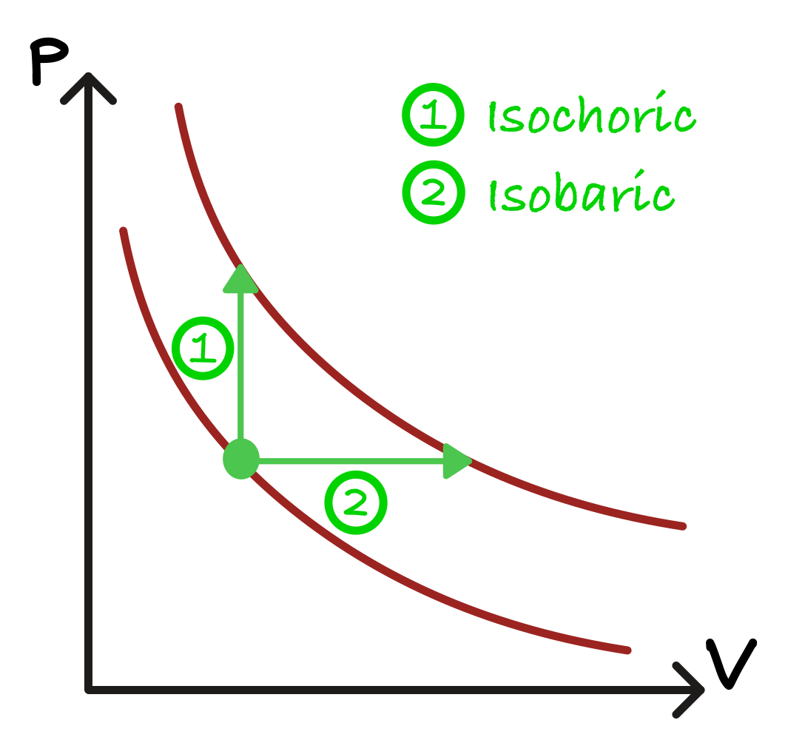
Fig. 3.3 Sketched graph depicting two paths of increasing the temperature of an ideal gas; either holding the pressure or volume of the system constant.#
Monatomic ideal gases (i.e., noble gases like He, Ne, Ar) each behave like a point particle which makes them the simplest case to describe. From kinetic theory, the average translational energy of \(n\) moles is just
Therefore, a change of \(dT\) increases the internal energy by
If volume is held constant, no work is done (will be discussed in more depth in section 4), and this raise in internal energy must take the form of an increase in kinetic energy.
Since \(dQ = dE_k\),
This result presents that the relationship between molar heat capacity at constant volume is simply \(\frac{3}{2}R\) for monatomic gases. For more complex gases like diatomic and polytomic gases, molecules can also store energy in rotational (and, at higher temperatures, vibrational) motion. We can predict how \(C_V\) changes for these cases through the principle of equipartition provides a systematic rule for how much energy each independent degree of freedom contributes.
Equipartition of Energy#
The principle of equipartition of energy, which states that each independent mode of motion (degree of freedom) contributes \(\frac{1}{2}k_BT\) of energy per molecule, or \(\frac{1}{2}RT\) per mole. The number of degrees of freedom depends on the ways in which a molecule can store energy, through translation, rotation, and vibration.
Monatomic molecules#
{kind=link}
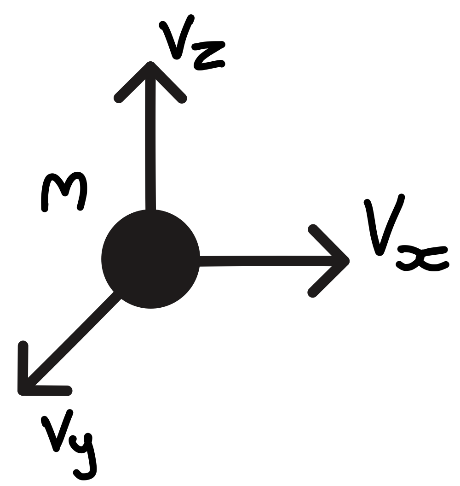
e.g., He, Ar, Ne
As above, we see that they have 3 (translational) degrees of freedom.
\(U = 3 * \left(\frac{1}{2}k_BT\right)*N = \frac{3}{2}nRT \)
Diatomic molecules#
{kind=link}
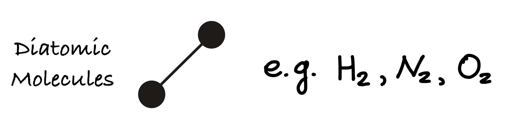
A diatomic molecule has more ways to store energy than monatomic ones.
Still has the three translational degrees of freedom.
Also, two rotational degrees of freedom (rotation along the axis of the molecule is usually negligible unless we get to extreme temperatures)
\(U = 5 * \left(\frac{1}{2}k_BT\right)*N = \frac{5}{2}nRT \)
This prediction agrees well with measured values for diatomic gases such as N2, O2 at room temperature.
{kind=link}
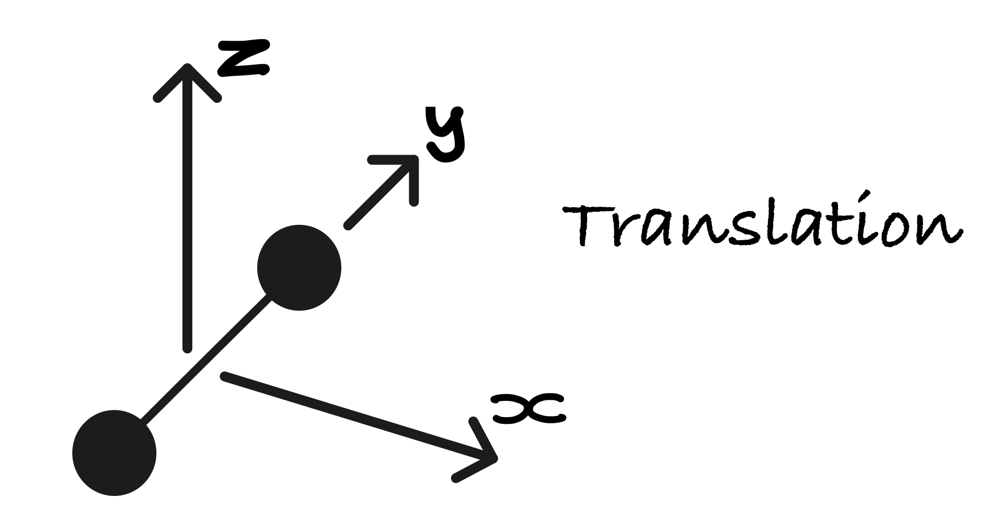
{kind=link}
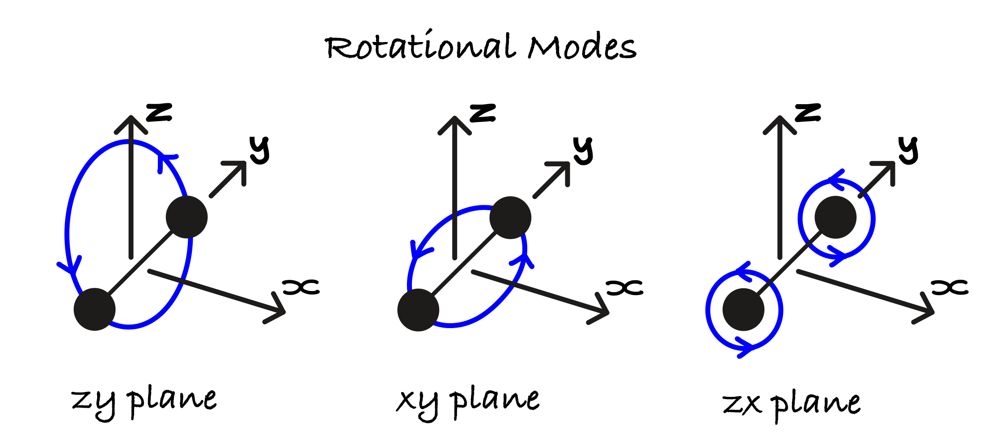
Fig. 3.4 Note that the third mode of rotation is negligible, resulting in little change to the system.#
Higher order modes#
Note that molecules can store energy not only through translation and rotation, but also through vibrational motion, where the bonds stretch and bend. Each vibrational mode adds additional degrees of freedom and therefore increases the heat capacity. However, vibrational motion is mostly relevant at higher temperatures otherwise these modes are generally frozen. This is due to quantum mechanics, in which vibrational energy is quantized and therefore a minimum fixed energy must be absorbed before a vibrational state is excited. For most diatomic molecules at room temperature, this required energy is much larger than the thermal energy available.
Vibrational motion contributes both kinetic and potential energy, so two degrees of freedom can be added
\(U = 7 * \left(\frac{1}{2}k_BT\right)*N = \frac{7}{2}nRT \)
{kind=link}
Fig. 3.5 Sketch of a corkscrew diatomically-bonded molecule.#
{kind=link}
Fig. 3.6 Graph showing how new degrees of freedom are unlocked as the system attains more energy as per the equipartition theorem.#
What does this mean for \(C_V\) vs \(C_p\)?#
Let us deal now with the differences between \(C_{V}\) and \(C_{p}\). Let us first consider a constant-volume thermodynamic process:
i.e. no work occurs during a thermodynamic process in which the volume is constant.
The first law of thermodynamics (to be discussed in detail in Module 4) states that the internal energy, U, is given by:
Therefore, we can set W = 0 for a constant volume thermodynamic process giving:
For an ideal gas, the variation of internal energy solely corresponds to the variation of kinetic energy of the system (the potential energy associated is \(E_{p}=0\)). Remembering the definition of the constant-volume heat capacity \(C_{V}\) and the equipartition theorem, C_{V} for a monoatomic molecule is:
At constant pressure \(p\), the work, W, is not zero, and the internal energy will be:
We can then susitute the ideal gas law (considering \(n=1\) mol gas) resulting in:
We can now determine \(C_{p}\):
These are the predictions from equipartition:
| Specific heat (J/mol/K) | monatomic | diatomic |
|---|---|---|
| Cv | 12.5 | 20.8 |
| Cp | 20.8 | 29.1 |
{kind=link}
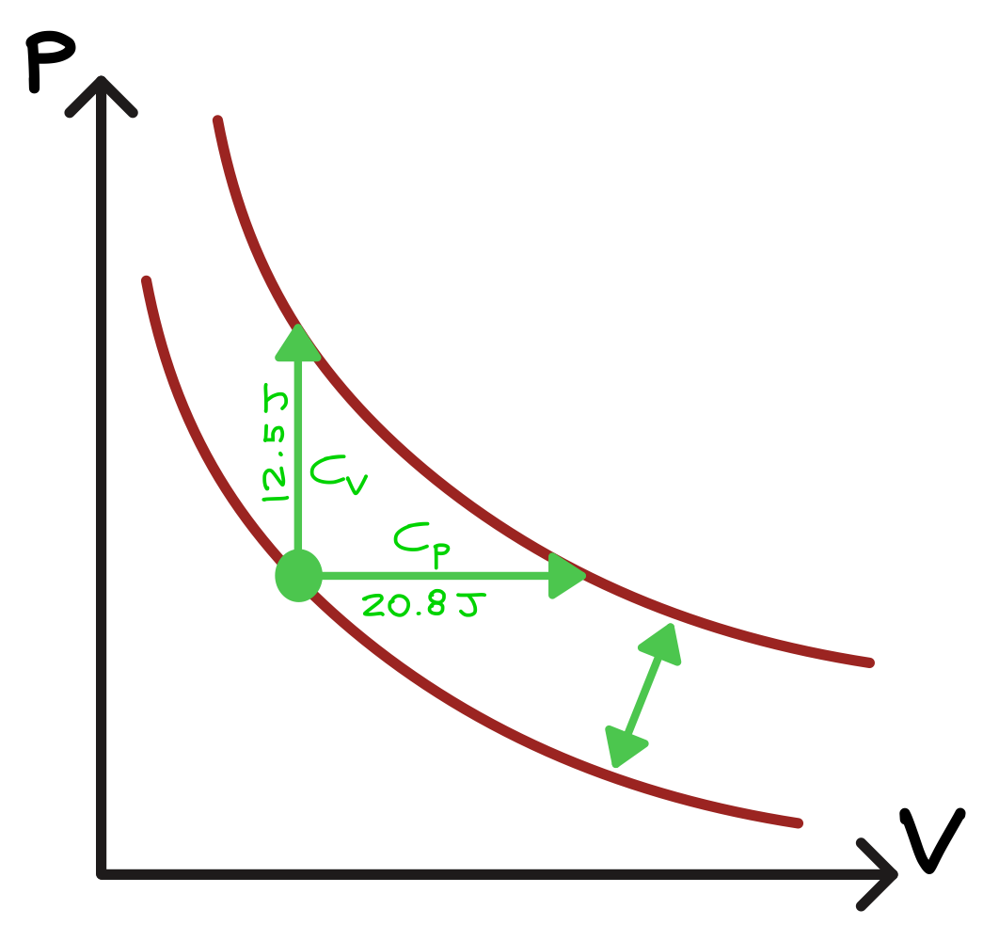
Fig. 3.7 Graph depicting the predicted isochoric (horizontal) and isobaric (vertical) process to raise the temperature of an ideal gas by 1 Kelvin.#
How about real gases?
| Monatomic | He | Ar | Ne |
|---|---|---|---|
| Cv | 12.5 | 12.5 | 12.7 |
| Cp | 20.8 | 20.8 | 20.8 |
| Diatomic | H2 | N2 | O2 |
|---|---|---|---|
| Cv | 20.4 | 20.8 | 21.1 |
| Cp | 28.8 | 29.1 | 29.4 |
Heat capacity of solids#
In this section, we explain why the molar heat capacity of elemental crystalline solids approaches \(\approx 25\,\mathrm{J\,mol^{-1}\,K^{-1}}\)
In a solid, atoms are bound to fixed equilibrium positions by interatomic forces and execute small oscillations about these positions. As a result, the total energy contains both \emph{kinetic} and \emph{potential} contributions. The kinetic energy arises from atomic motion in the three spatial directions \((v_x, v_y, v_z)\), while the potential energy originates from lattice vibrations associated with bond stretching and compression.
In the harmonic approximation, these vibrational degrees of freedom can be modeled as atoms connected by springs to their nearest neighbours in the lattice (Fig. 3.8).
{kind=link}
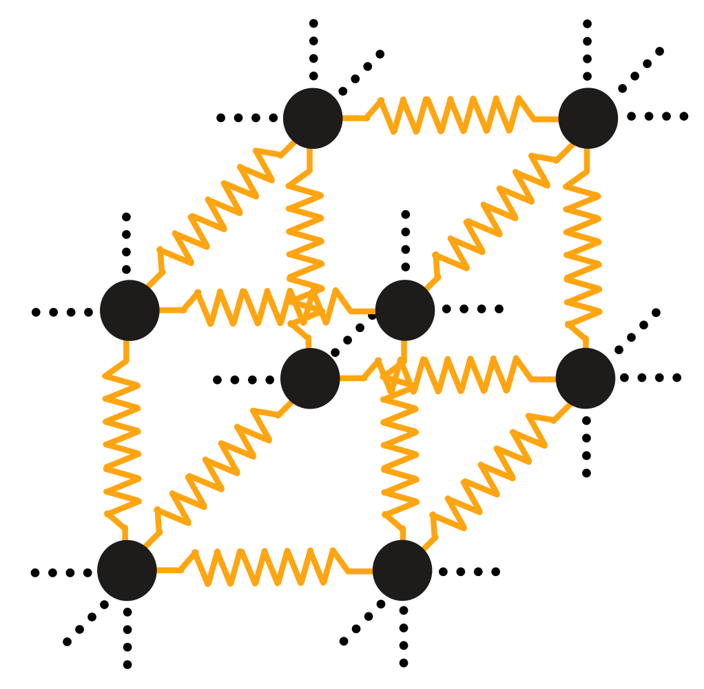
Fig. 3.8 Diagram of a solid, cubic lattice portraying the interatomic bonds as springs. This allows the atoms to oscillate along all of their bond axes.#
For a harmonic spring obeying Hooke’s law,Hook’s law: \(F_{spring}=kx\). The associated potential energy is:
Each atom in a three-dimensional lattice possesses three independent vibrational modes. By the equipartition theorem, each quadratic degree of freedom contributes \(\tfrac{1}{2}k_B T\) to the thermal energy giving \(E_{p}=\frac{3}{2}k_{B}T\).
Since each vibrational mode has both a kinetic and a potential energy term, the total molar energy of the system:
Corresponding to a constant-volume heat capacity of:
This result is known as the Dulong-Petit law. It is valid in the classical (high-temperature) limit, where all vibrational modes are thermally populated. At low temperatures, high-frequency vibrational modes are progressively frozen out due to quantum effects, causing the heat capacity to fall below the Dulong-Petit value.
Measured heat capacities of real gases closely follow equipartition predictions.
3.4. Compressing a Gas or Vapour#
What happens when we compress a gas or vapour?
{kind=link}
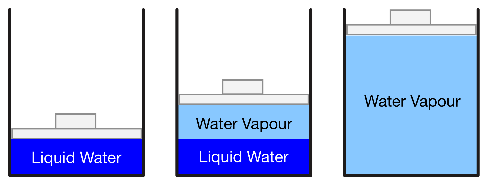
Fig. 3.9 From left-to-right this figure depicts the reversible process of liquid water evaporating when the volume of its container is expanded, leading to a drop in pressure which results in the water boiling. The process can be reversed by using a force to compress the piston onto the steam, which gradually leads to to condensation as the pressure increases once more.#
Scenario: A vapour is contained in a cylinder with a movable piston. We slowly compress the vapour while allowing heat exchange so that the process is approximately isothermal (constant temperature).
We want to understand how pressure, volume, and the phase of the material change during compression - phase is a region of matter homogeneous in properties (e.g., liquid, vapour).
Stage 1: Pure Vapour (Gas)
Initially, the cylinder contains vapour only. Compression reduces the volume and the pressure rises according to the Ideal gases.
The pressure increases smoothly as the volume decreases.
No liquid is present.
This corresponds to the vapour region on the p-V diagram (right side):
{kind=link}
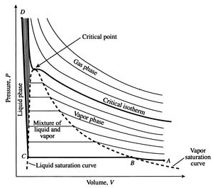
Fig. 3.10 Pressure–volume (P–v) diagram for a two-phase system showing isotherms, liquid–vapour coexistence, and the critical point. Source: MIT OpenCourseWare, Thermodynamics, Fig. 8.3.#
Stage 2: Saturation Point (First Drop of Liquid Appears)
Eventually, the vapour reaches a saturation pressure at the given temperature. At this moment:
The vapour is just dense enough to start condensing.
The first droplet of liquid forms.
This is called the dew point. Now the system enters the two-phase region.
Stage 3: Two-Phase Mixture (Liquid + Vapour)
Continuing compression:
More vapour condenses into liquid.
The amount of liquid increases, vapour decreases.
Pressure remains constant, even though volume continues to decrease. This constant pressure is the saturation pressure at the chosen temperature.
The work done is used to change phase, not increase pressure. This corresponds to the horizontal line inside the dome on the P–V diagram (above).
Stage 4: Fully Liquid (Subcooled Liquid Region)
Eventually, no vapour remains. The system is now all liquid. Liquids are nearly incompressible, so:
Further compression causes very little volume change,
But pressure increases steeply.
This corresponds to the left side of the p-V diagram.
{kind=link}
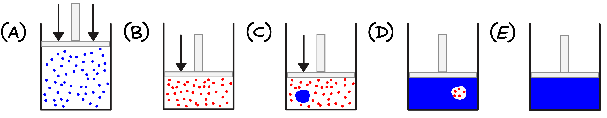
Fig. 3.11 Schematic illustration of vapour compression in a piston–cylinder. (A) A gas initially occupies the full volume at low density. (B) Compression increases the gas density as the piston moves downward. (C) At sufficiently high pressure, liquid nucleation begins within the vapour, producing a two-phase mixture. (D) Continued compression converts most of the system into liquid, with residual vapour bubbles remaining. (E) The system is fully liquefied, and further compression produces negligible volume change.#
3.5. The Physics of Real Gases#
In Section 3.3, we considered the molecular model for an ideal gas. For a real gas, these assumptions are only approximate. To assess how close a real gas is to ideal behaviour, we define the compressibility factor, \(Z\):
where \(Z=1\) for an ideal gas.
Compressibility#
{kind=link}
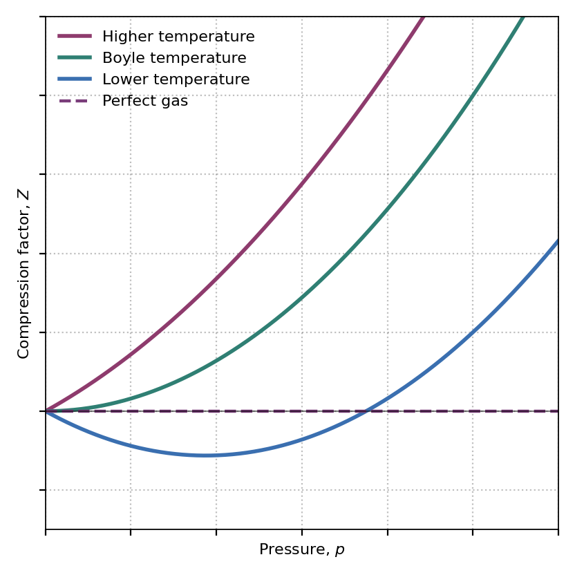
Fig. 3.12 Compression factor \(Z = pV / nRT\) plotted against pressure for a real gas at different temperatures. At high temperatures, there is repulsion without attraction and so \( Z \geq 1 \), rapidly deviating from ideality as \(P\) increases. At lower temperatures, attractive forces between molecules can offset the repulsive forces from higher pressure, where the gas behaving “ideally” for the largest range of pressures is called the “Boyle temperature”. For even lower temperatures however, this can be seen to simply form an arc below ideality, and then follow a similar curve as in the high pressure case.#
In the above plot, the red horizontal line at \(Z = 1\) represents the ideal gas - no deviation with pressure. Real gases show different behaviour depending on temperature.
High temperature: Thermal energy dominates over intermolectular forces and molecules do not significantly attract or repel each other, so the curve stays above or close to 1.
Low temperature: Attractive forces matter more, where at moderate pressure, attraction dominates and the gas compresses more easily so \(Z < 1\). For high pressure, repulsive forces dominate and \(Z > 1\).
Boyle temperature: The Boyle temperature \(T_B\) is the temperature at which a real gas shows minimal deviation from the ideal gas law over a moderate pressure range. At this temperature, \(Z=PV/nRT \approx 1\) for relatively low to moderate pressures.
At \(T_B\), attractive and repulsive effects approximately cancel out, leading to ideal gas behaviour over a range of low to moderate pressures.
More precisely, if we expand (virial expansion) the compressibility factor:
B(T) is the second virial coefficent, which encodes the balance of intermolecular attractions.
Definition
The Boyle temperature TB is defined by B(T_B) = 0
Therefore, at \(T=T_B\) the gas obeys the ideal gas equation most closely at low to moderate pressures.
We can then conclude that attractive forces dominate below \(T_B\) (\(Z<1 \rightarrow\) gas is more compressible) and repulsive forces dominate at temperatures greater than \(T_B\) (\(Z> 1 \rightarrow\) gas is less compressible).
Molecular interactions#
In an ideal gas, molecules are treated as point particles with no intermolecular forces. However, real gases deviate from ideality because molecules interact through attactive and repulsive forces.
These interactions can be represented using a molecular potential energy curve \(\phi(r)\) where:
\(\phi =\) intermolecular potential energy,
\(r =\) separation between two molecules,
\(r_0 =\) equilibrium separation.
{kind=link}
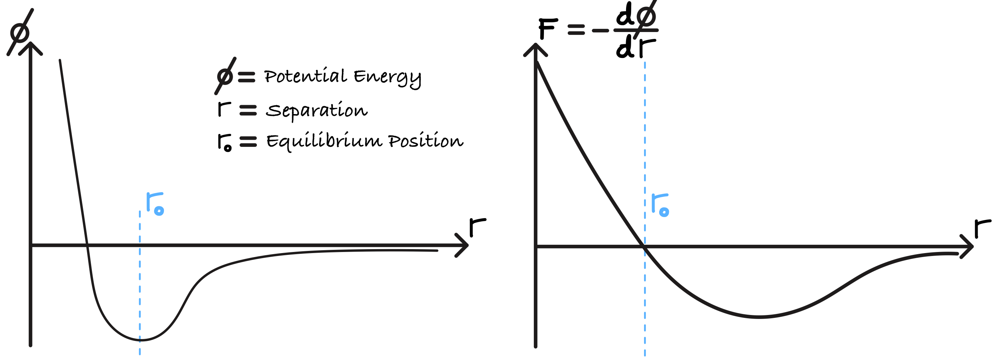
Fig. 3.13 The Lennard-Jones potential and derivative, providing the force \(F\) as a function of \(r\).#
At very small separations \((r<r_0)\), strong repulsive interactions dominate. This is the steep rise on the left, a result of electron cloud overlap which prevents molecules from occupying the same space.
At moderate separations \((r>r_0)\), weak attractive forces dominate. This is the shallow well at \(r_0\) (e.g., van der Waals, see below), which reduces the pressure compared to an ideal gas.
At large separations \((r\rightarrow \infty)\), interactions become neglibigle \((\phi(r)\rightarrow 0)\). We can see that the tail approaches 0 as \(r \rightarrow \infty\), meaning that the gas can be treated as an ideal gas.
For completion, we will relate the validity of considering a gas “ideal” by introducing the “gas compressibility” \(Z\). At low temperatures with lower pressure, \(Z<1\). At high pressure, repulsion dominates, resulting in \(Z>1\).
Van der Waals forces#
The 19th century Dutch physicist J. D. van der Waals developed an equation to correct for real gas behaviour. Crucially, this equation incorporates the following ideas:
Molecules attract each other at moderate distances,
Molecules occupy finite excluded volume.
{kind=link}
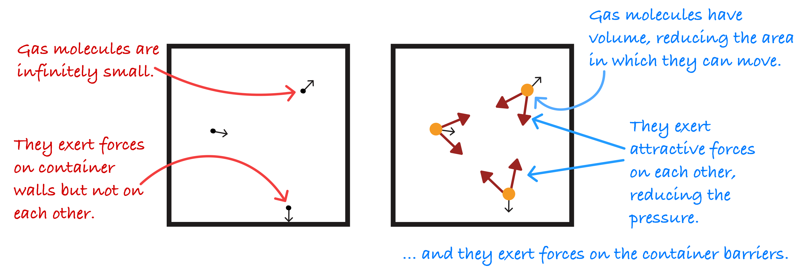
1. Pressure correction
For a real gas, a molecule approaching the wall is pulled back by neighbouring molecules. Therefore the net force it exerts on the wall is smaller than for an ideal gas and the measured pressure is lower than the ideal gas:
Attractive interactions reduce the pressure by an amount proportional to the probability that two molecules are close,
where \(V_m\) is the molar volume,
\(a\) is a constant describing the strength of intermolecular attraction,
and squaring the equation gives pairwise interactions.
The true pressure of a real gas is then
2. Volume correction
For two spheres of radius \(r\), the centre of one cannot enter a sphere of radius \(2r\) around the other. The excluded volume for a pair is then
Van der Waals simplified this equation and denoted the excluded volume per mole as \(b\), a constant, resulting in:
Inserting the two corrections into our ideal gas formula,
forming the van der Waals equation.
To reiterate,
\(a\): depends on the attractive intermolecular forces, which reduce the pressure of the gas by pulling the molecules together as they push on the walls of the container. The more particles, the stronger the attraction and the larger the pressure correction.
\(b\): represents the volume of a mole of molecules; the total volume of the molecules is \(nb\), and the volume remaining which the molecules can move is \(V -nb\). Essentially it is the measured effective volume excluded by the molecules having non-zero width.